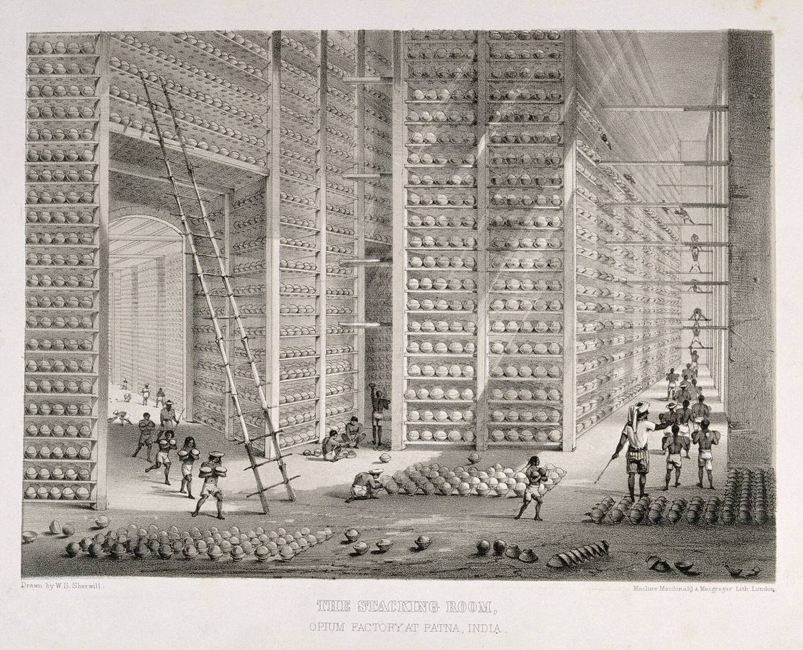
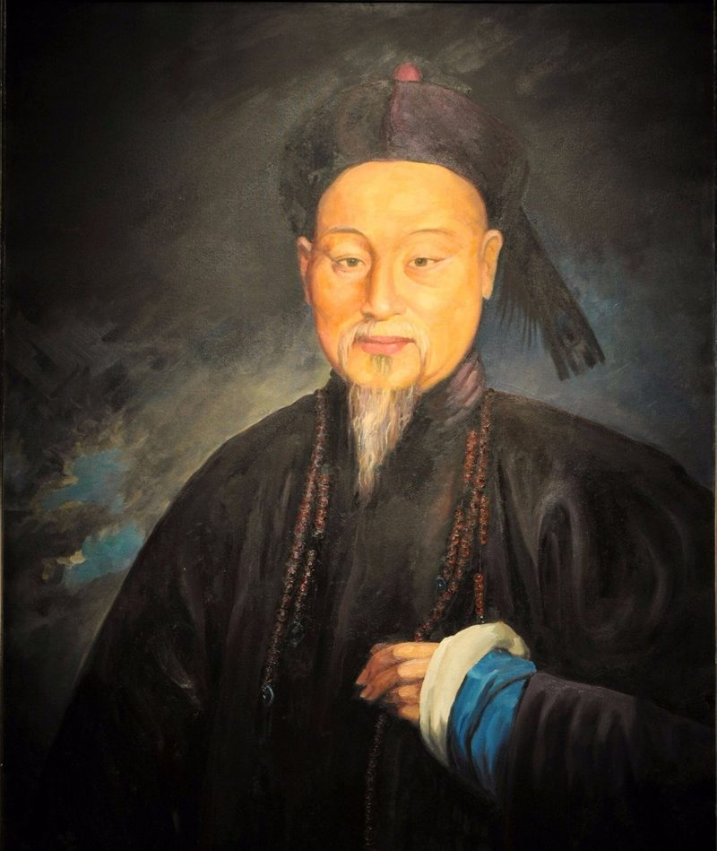
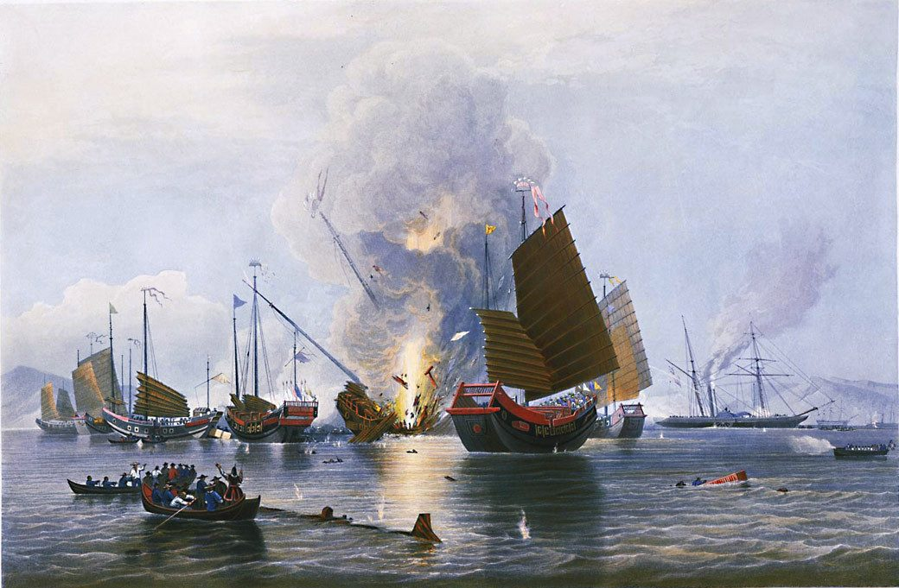
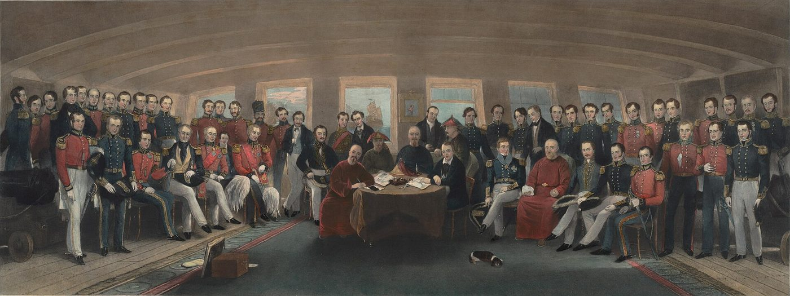
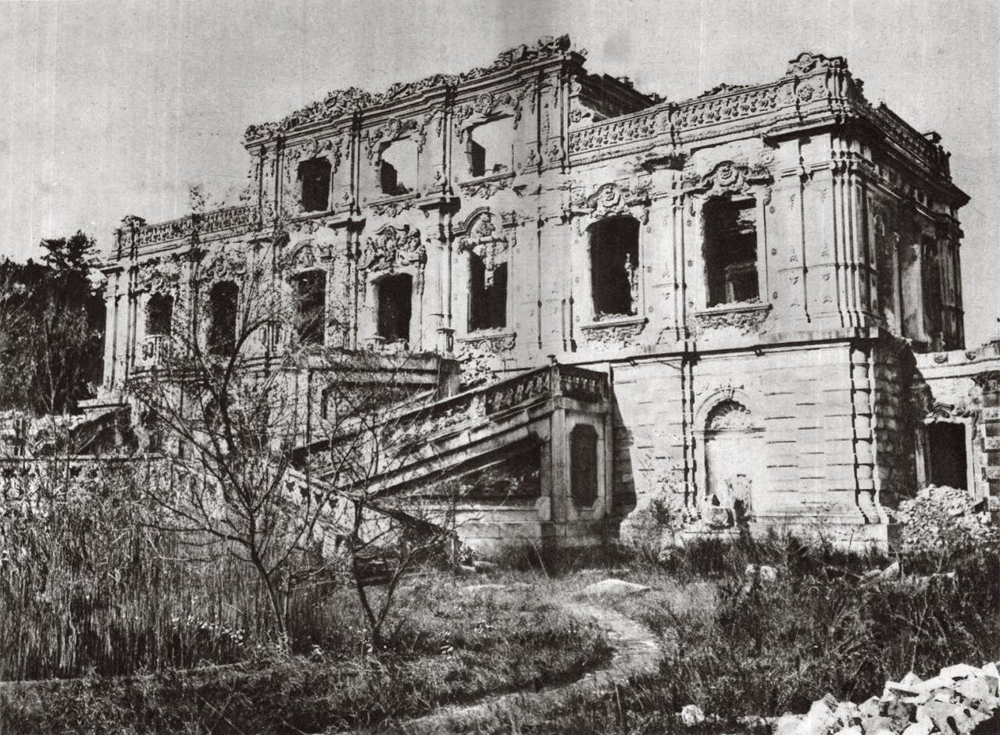
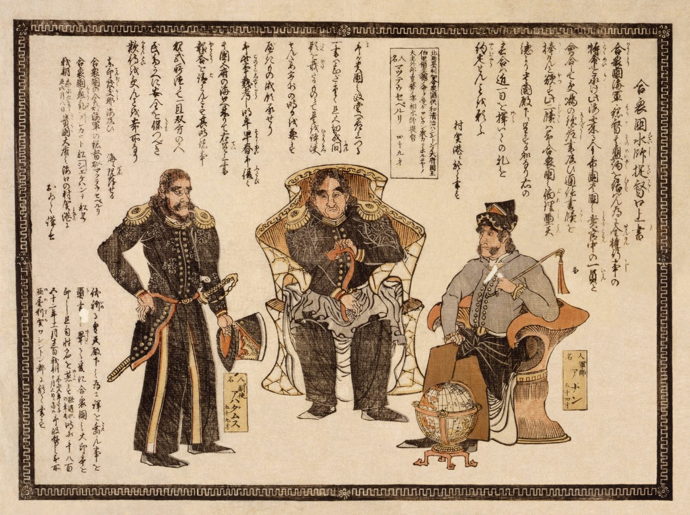
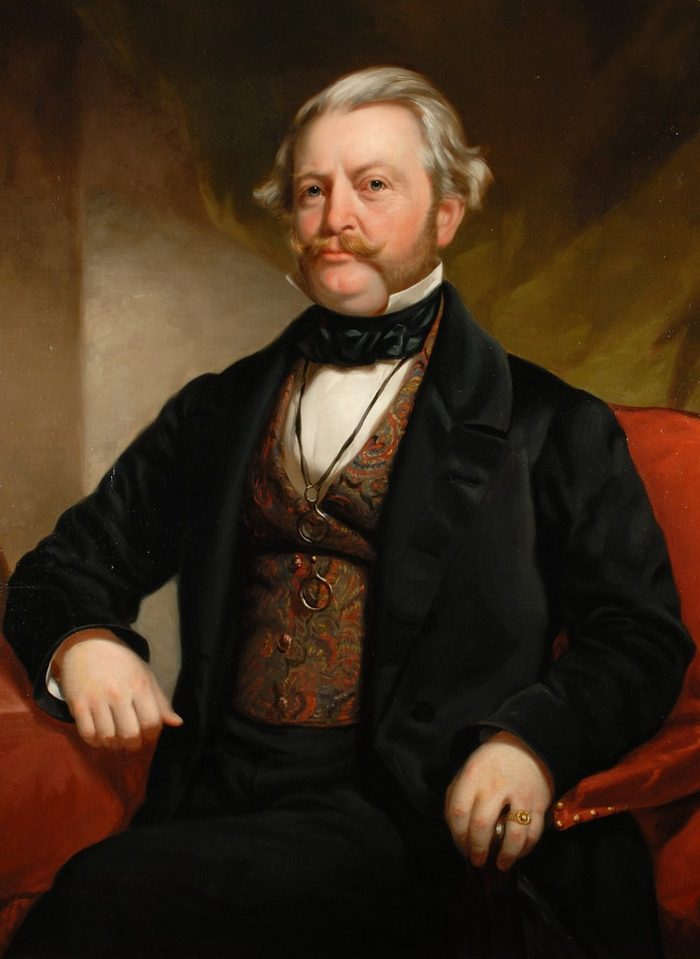
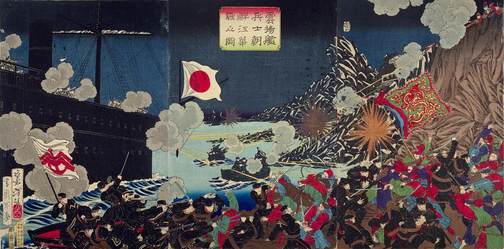
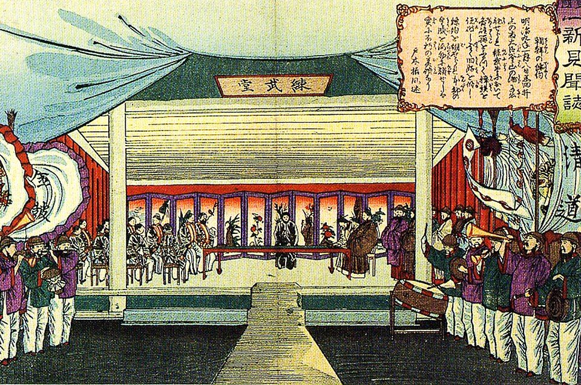

Unit 5 · Study guide · Comparative
The Western Challenge 不平等條約
Opium, gunboats, and the unequal treaties across China, Japan, and Korea, 1793–1882
ContentsOverview
The unit in one paragraph
pp. 306–313 and chapter passages
In the 1800s Europeans came back to East Asia with steam power, modern guns, and states that wanted colonies and markets. Britain paid for Chinese tea with Indian opium; when China tried to stop the drug, Britain won the Opium War (1839–1842) and imposed the first unequal treaty. Within forty years every East Asian state had signed one: Japan with the United States (1854, 1858), and Korea with Japan (1876). Instead of colonies, the West built a treaty-port system resting on extraterritoriality and the most favored nation clause. The three countries met the same threat in very different ways. pp. 306–308, 313
- What made nineteenth-century Western imperialism different from European contact before 1800?
- Why did the opium trade lead to war, and why did China lose so badly?
- What made a treaty "unequal," and how did one treaty's privileges spread to every power?
- Why did news of China's defeat shake Japan but not Korea?
- How did Japan go from signing unequal treaties to imposing one on Korea?
Timeline at a glance
Key terms first
Terms are grouped by topic. Where a term depends on another, the entry says what it builds on, so read those first. Hover or tap any dotted term in the text for a quick definition, or open ✎ Key terms at the bottom right. † marks a term or fact from outside the textbook.
Empire and its ideas
- Industrial revolution · steam power
- The shift to machine industry that freed Europe from relying on farm products. It produced coal-fueled steamships, better weapons, and states able to command men and resources far from home. p. 306
- Sovereignty
- A state's full authority over its own territory, people, laws, and courts. The new European focus on nationhood demanded clear boundaries and sovereignty, so every piece of land had to "belong somewhere." p. 306
- Great Power status
- Recognition as one of the leading nations. After Napoleon's defeat in 1815 it seemed to require colonies, so competition among European states drove imperialism. p. 306
- Social Darwinism
- The idea, developed by Herbert Spencer and others from Darwin, that nations as well as species face extinction unless they win a ceaseless competition. It gave Westerners a new justification for their sense of racial superiority. p. 313Builds on: Great Power status
- Tribute system
- The rules, largely inherited from the Ming, by which the Qing dealt with foreign states: rulers sent missions and performed rituals that affirmed the emperor's superiority. Korea was a Chinese tributary. pp. 306–307, 315, 371
- Kowtow
- Kneeling and bowing the head to the ground before the emperor, one of the tribute rituals. The British envoy of 1816 refused it, so the emperor would not see him. p. 307Builds on: tribute system
- Indemnity
- Compensation for the victor's losses, forced on the loser of a war. Burma paid one in the 1820s; China paid them after each defeat. pp. 307, 317
China's trade and the Opium War
- British East India Company
- The chartered British trading company that took over much of India, grew opium in Bengal, and held a monopoly on Britain's China trade until 1834. Abolished after the 1857 Indian Rebellion. pp. 306–308, 315–316
- Canton system
- The Qing rule that Europeans could trade only at Guangzhou (Canton) and only through licensed Chinese merchants. See Unit 4. p. 315
- Cohong
- The merchant guild responsible to the Qing court for managing foreign trade at Guangzhou. British traders wanted its monopoly ended; the Treaty of Nanjing abolished it. p. 308Builds on: Canton system
- Opium
- A drug made from poppy sap, long used in China as medicine. Once people smoked pure sap in pipes it became an addictive recreational drug. China banned its import and production in 1800 and its smoking in 1813. pp. 315–316
- Cash
- China's everyday copper coins. Farmers were paid in cash, but their taxes were assessed in silver, so they had to buy silver with cash to pay. p. 317
- Silver drain
- The outflow of silver from China to pay for opium, rising from about 2 million ounces a year in the 1820s to about 9 million in the 1830s. Silver grew dearer: one ounce cost 1,500 cash in 1800 but 2,700 in 1830, hurting taxpayers. pp. 308, 317Builds on: opium, cash
- Imperial commissioner
- An official sent by the emperor with special powers for a single task. Lin Zexu went to Guangzhou as imperial commissioner in 1839 to suppress the drug trade. p. 308
- "Free trade" and "normal" relations
- The British view that all "civilized" nations practiced free trade and handled relations through envoys and treaties. By this standard China was out of step with the modern world. p. 317
- Matchlock musket
- An old firearm in which each load of gunpowder had to be ignited by hand. The minority of Qing soldiers with firearms had these; the British had rifles. p. 318
The treaty system
- Unequal treaty
- A treaty, usually concluded at gunpoint, that gave benefits to the foreign power but not to the East Asian state, which got no matching privileges abroad. The 1842 Treaty of Nanjing was the first. pp. 308, 317Builds on: sovereignty, indemnity
- Treaty port
- A city opened by treaty to foreign residence and trade: five in China in 1842, more after 1858. Japan and Korea later had to open their own. pp. 308, 317, 339, 373
- Fixed tariff
- An import tax set by treaty instead of by the country itself: 5 percent in China after 1842. Japan's 1858 treaty also forced low tariffs on imports, while Japanese exports faced steep U.S. tariffs. pp. 317, 339Builds on: unequal treaty
- Extraterritoriality
- The privilege that foreigners were subject only to their own country's laws, judges, courts, and prisons, even in disputes with local people. First granted to Americans in China (1844). An infringement on sovereignty. pp. 308, 317Builds on: sovereignty
- Most favored nation clause
- A treaty clause by which a power automatically received any privilege the country later granted to any other power. With extraterritoriality, it was a hallmark of the unequal treaty system. pp. 308, 317Builds on: unequal treaty
- Multilateral imperialism
- Historian Akira Iriye's term for the way, through the most favored nation clause, every Western power shared in whatever privileges any one of them won. p. 308Builds on: most favored nation clause
- Resident ambassador
- A foreign diplomat stationed permanently in the capital. The Qing resisted them, seeing them as little better than spies, until forced to accept them in 1858–1860. pp. 309, 321
- Transit tariff
- A tax on goods moving within China. The 1858 treaties capped it at 2.5 percent for foreign goods. p. 321Builds on: fixed tariff
- Arrow War
- The British and French name for the Second Opium War, from the name of a ship that gave Britain a pretext for war. It ended with the Treaties of Tianjin and the occupation of Beijing. pp. 307, 321
- Sphere of influence
- A region where one power's officials and traders dominated without making it a colony. Late in the century the powers carved these out along China's coast and up the Yangzi. p. 311
- Open Door
- U.S. Secretary of State John Hay's call for the powers not to use their spheres of influence to exclude Americans. The powers agreed, with reservations. p. 311Builds on: sphere of influence
Japan
- Tozama domain
- An "outside" domain, whose lord's family had not been a Tokugawa ally before 1600, such as Satsuma. See Unit 3. p. 338
- 1825 expulsion order
- After British ships raided coastal villages, the shogunate ordered all foreign ships, except the Dutch at Nagasaki, driven off without hesitation. It was Japan's first truly isolationist policy; it was relaxed in 1842. p. 338
- Shinron New Theses
- An 1825 treatise by the Mito scholar Aizawa Seishisai. It warned that trade drained precious metals and that traders spread Christianity to win over commoners and "conquer from within." It shaped later nationalist thought. p. 338
- Kokutai
- Japan's unique spiritual essence. Mito scholars held Japan superior to all countries because its monarch descended from the sun goddess; Aizawa wanted the masses taught this essence. p. 338Builds on: Shinron
- Kanagawa treaty
- The 1854 friendship treaty Perry obtained. It opened Shimoda and Hakodate to American ships for coal and supplies, promised fair treatment of shipwrecked sailors, allowed a U.S. consul at Shimoda, and gave most favored nation treatment. pp. 309, 339Builds on: most favored nation clause
- Consul
- An official stationed in a foreign country to look after his nation's trade and citizens. Townsend Harris, the first U.S. consul in Japan, arrived at Shimoda in 1856. p. 339
- Harris treaty
- The 1858 commercial treaty Townsend Harris won by pointing to China's fate. It exchanged diplomats, opened six cities to foreign residence and trade, imposed low tariffs, and granted extraterritoriality. Similar treaties followed with four European powers. pp. 309, 339Builds on: treaty port, fixed tariff, extraterritoriality
- Kawaraban
- Broadsheets, sold anonymously in cities, that reported news and gossip on the treaty negotiations. With letters and diaries they helped create a new public political realm. p. 340
- Sonnō jōi
- "Revere the monarch and expel the barbarian": Yoshida Shōin's slogan. The monarch should share in policy, and foreigners must be driven off. p. 340
- Fukoku kyōhei
- "Rich country, strong army," a slogan from the Chinese classics popularized by Yokoi Shōnan for those who wanted to open Japan and gain Western knowledge and tools. p. 340
Korea
- Daewongun
- The father of King Gojong, who took the throne at twelve in 1864. He governed behind the king, combining domestic reform with isolationism: he rejected every foreign request for a treaty to avoid China's and Japan's fate. Forced into retirement in 1874. pp. 369–370, 372
- General Sherman incident
- In 1866 a ship under the U.S. flag sailed up the Daedong River near Pyeongyang demanding trade. Local people burned it and killed its crew; the U.S. used this as a reason for its 1871 attack. p. 370
- Ganghwa Island
- An island whose forts guarded the entrance to Seoul. French troops landed there in 1866, U.S. marines in 1871, and Japanese troops in 1875. pp. 309, 370, 373
- Ganghwa Treaty
- Korea's first modern treaty, forced by Japan in 1876. It opened Busan and two more ports to Japanese trade and imposed extraterritoriality. Japan gained the same privileges Westerners held in Japan. pp. 311, 373Builds on: unequal treaty, extraterritoriality
- "Strategy for Korea"
- A recommendation sent to King Gojong in 1880 by Huang Zunxian, a Chinese official in Tokyo, arguing that Korea should sign treaties with all the Western powers for self-protection. p. 373
- "Self-governing" tributary
- The compromise in the 1882 U.S.–Korea treaty: King Gojong wrote to President Arthur that Korea was both self-governing and a Chinese tributary. The U.S. treated Korea as sovereign; Korea and China treated tribute as intact. p. 374Builds on: tribute system, sovereignty
A new kind of empire
pp. 306–307, 313
Before 1800 Europeans in Asia mostly held trading posts; Spain's Philippines was the only colony (see Unit 4). In the nineteenth century trading companies were followed by government officials, who regulated and taxed trade, then ran whole territories, and finally drilled local troops into uniformed battalions. Trading posts from India to Indonesia became colonies.
- Fragile wooden sailing ships
- Latecomers to existing Asian trade
- Scattered trading posts
- Enlightenment admiration for China and Confucian reason
- Coal-fired steamships and modern weapons
- States ruling territory and drilling native troops
- Colonies, needed for Great Power status
- Disdain for "godless heathens"; racial line between whites and everyone else
Why the change? pp. 306, 313
- Industry. The industrial revolution gave Europe steam engines, better guns, and states that could command men and resources.
- Nationalism. The Napoleonic Wars spread a sense of nationhood that demanded clear borders and sovereignty. Small states like Vietnam, the Ryukyus, and Korea could no longer sit in a half-independent place under China's protection.
- Rivalry. Peace in Europe after 1815 freed nations to compete abroad.
- Ideology. Later in the century Social Darwinism taught that weak nations naturally fell to the strong. Some used it to justify exploitation; others felt a duty to "civilize." Kipling's poem "The White Man's Burden" (1899) voiced this second view.
Two missions, no deal pp. 306–307
Britain sent Lord Macartney to Beijing in 1793 to remove limits on the number, destination, and schedule of its ships. Because trade controls kept order, reduced smuggling, and affirmed the emperor's superiority, he failed. A second mission in 1816 refused the kowtow, and the emperor would not see the envoy. Meanwhile Britain seized Singapore (1819) to guard its route between India and China, and British ships began to appear off Japan.
For the Qing, trade rules were part of the tribute system and social order. For Britain, they were "unnecessary restrictions." This clash of assumptions runs through the whole unit.
Tea, opium, and silver
pp. 308, 315–317
By 1750 Britain imported well over 2 million pounds of Chinese tea a year. China wanted few British goods, so Britain paid in silver. The answer the British found was opium, grown in Bengal under a monopoly of the East India Company. After 1761 the trade balance began to tilt in Britain's favor. pp. 308, 315
How the drug spread pp. 315–317
China banned opium imports and production in 1800 and smoking in 1813, so the Company stopped carrying the drug itself. Licensed private traders, American as well as British, brought it to ships anchored off the coast; Chinese smugglers carried it ashore through chains of middlemen. A price war among traders made opium cheaper, which spread addiction. An 1831 inquiry found members of the imperial clan, high officials, and bannermen among the addicts.
The silver drain, in the textbook's numbers
Bars are scaled within each pair. 40,000 chests was enough for about 2 million addicts.

Why did the silver drain hurt ordinary people? Farmers were paid in copper cash but taxed in silver. As silver left China it grew scarce and dear, so the same tax cost almost twice as much cash. p. 317
The debate at court p. 317
Taxes would ease the revenue shortfall, and higher prices might deter some users.
An evil like opium had to be stopped. Lin Zexu urged going after importers and sellers, not users: otherwise the Qing would have no soldiers and no funds for an army.
Lin's passion and reputation for honesty won. In late 1838 the Daoguang emperor gave him the job.
The Opium War, 1839–1842
pp. 308, 316–318

As imperial commissioner, Lin moved fast in 1839. He arrested some 1,700 Chinese dealers and seized 70,000 pipes. He demanded the foreigners' opium, offering tea in exchange, and wrote to Queen Victoria asking for the same right to suppress drugs that her officials had at home.
When the merchants refused, he stopped all trade and besieged their enclave. After six weeks they gave up about 2.6 million pounds of opium (some 20,000 chests). Five hundred laborers spent twenty-two days mixing it with salt and lime and washing it into the sea. pp. 308, 317
To the British superintendent of trade, this was an insult and cause for war; the merchants, angry at losing property without payment, appealed to Parliament. pp. 308, 317
The campaign pp. 308, 317
- 11840: A force of 42 ships from India, many leased from the opium firm Jardine, Matheson, avoids Lin's strong defenses at Guangzhou, blockades the river, and sails north.
- 2Ningbo and Tianjin: With the fleet near Tianjin, the closest port to Beijing, the Qing negotiate.
- 3Preliminary deal: Hong Kong, an indemnity, wider trade, and direct contact with officials. Both governments are outraged. The emperor had already exiled Lin; now the negotiator is treated as a criminal.
- 41841–1842: A larger British force takes Guangzhou, Shanghai, and other ports, then sails up the Yangzi to Nanjing. Dozens of Qing officers kill themselves rather than face defeat.
- 51842: The Qing capitulate: the Treaty of Nanjing.

Why the Qing lost p. 318
| Qing | British | |
|---|---|---|
| Navy | None | Large men-of-war plus shallow-draft steamships that could sail up rivers |
| Tactics | Fixed coastal forts | Land troops anywhere, pillage, re-embark, strike a new target |
| Infantry arms | Swords, spears, clubs, arrows; a few matchlock muskets | Rifles |
| One day in 1841 | A single steam warship with long-range guns destroyed nine war junks, five forts, two military stations, and a shore battery. | |
The Manchu bannerman Guancheng returned home to Zhapu in 1842 to find that its garrison had fallen to the British; many defenders had killed themselves and their families. Though ill, he wrote and printed an account of their heroism to win help for survivors and honor for the dead. p. 319
The defeat was a first: a Western power had never before claimed victory in battle in East Asia. It sent shock waves through Japan but not Korea, which heard of it only through official channels in Beijing. p. 308
The unequal treaty system
pp. 308, 317–318
Signed at gunpoint, the 1842 Treaty of Nanjing gave benefits to Britain but none to China. That made it unequal. A supplementary British treaty followed a year later, then treaties with the United States (1844) and France. Together they set the pattern.

| Term | What it meant |
|---|---|
| Five treaty ports | Guangzhou, Xiamen (Amoy), Fuzhou, Ningbo, and Shanghai† opened to British residence and trade; the Cohong abolished |
| Hong Kong | Ceded to Britain |
| Indemnity | 21 million silver dollars for Britain's war costs |
| Fixed tariff | Import duties set at 5 percent |
| Most favored nation | Britain automatically got any privilege China gave another power |
| Extraterritoriality | From the 1844 U.S. treaty (which also allowed churches and hospitals): foreigners answered only to their own laws and courts |
† Port names: MIT Visualizing Cultures, "The First Opium War." The textbook gives the number, not the names. Signing date: Encyclopaedia Britannica, "Treaty of Nanjing."
Watch the most favored nation clause work
Because China enjoyed no such rights abroad, most favored nation status and extraterritoriality became the hallmarks of the system. Historian Akira Iriye called the result multilateral imperialism. p. 308
Britain Nanjing 1842
United States 1844 treaty
France treaty after 1842
Later signers any power with MFN
An uneasy peace p. 318
The Qing court split between a peace faction, led by the Manchu chancellor Mujangga, and Chinese degree holders who backed Lin and wanted stronger resistance. The emperor who succeeded Daoguang in 1850 dismissed Mujangga and recalled Lin. The court kept finding excuses not to receive foreign diplomats and fell short on the commercial clauses, which set up the next war.
The Second Opium War, 1856–1860
pp. 309, 321–322
Britain and France both wanted the treaties renegotiated. Claiming China had not carried out the 1842 terms, they repeated the Opium War's swift coastal attacks. Britain called it the Arrow War.
- 1End of 1857: Guangzhou is captured and its governor-general seized; the city is held for three years.
- 2Mid-1858: British and French ships take the forts at Tianjin. Threatened with a march on Beijing, the Manchu negotiator concedes: the Treaties of Tianjin, with the U.S. and Russia also gaining.
- 3A year later: Returning to ratify, the British insist on sailing up the Beihe River toward Beijing; Qing forces drive them back.
- 41860: A new expedition of 11,000 British and 6,700 French soldiers charges into Beijing. They loot and burn the summer palace, a complex of some 200 buildings over 10 square miles. The Russian envoy talks the court into accepting terms.
| Term | Detail |
|---|---|
| New treaty ports | Ten in 1858 (Ch. 18), plus Tianjin in 1860†: eleven in all, the figure given in Connections |
| The interior | Foreign vessels on the Yangzi; foreigners, including missionaries, free to travel; tolerance for converts |
| Diplomats | Resident ambassadors in Beijing |
| Taxes | Low tariffs; a transit tariff of no more than 2.5% |
| Opium | Imports legalized |
| Indemnity | 4 + 2 million ounces of silver (Britain, France), raised in 1860 to 16 million |
| Territory | Kowloon peninsula to Britain; Russia takes eastern Manchuria's coast down to Vladivostok (1858–60) |
† Tianjin's opening in the 1860 Convention of Beijing: Academy of Chinese Studies, "Conventions of Peking."

Having won so much through the treaties, the Western powers after 1860 increasingly saw propping up the weak Qing dynasty as in their own interest. That story continues in Unit 6. p. 322
Japan: from exclusion to Perry and Harris
pp. 309, 338–340
Closing the door p. 338
- Russia came first: Laxman at Nagasaki (1793), raids on Sakhalin and the Kurils (1806–07).
- Britain was the bigger threat: the warship Phaeton forced its way into Nagasaki bay (1808), and whalers raided villages in Mito and in the tozama domain of Satsuma (1824).
- The shogunate answered with the 1825 expulsion order. That year Aizawa Seishisai wrote Shinron, warning that traders brought Christianity to "conquer from within."
- News of China's defeat in the Opium War pushed the shogunate to adopt some Western military technology and, in 1842, to supply ships in need before sending them away.
The black ships pp. 309, 339
Earlier U.S. tries had failed: the Morrison (1837) and Commodore Biddle (1846). The U.S. now wanted coal for steamer routes to Shanghai and water and fuel for its whalers.
On July 8, 1853, Commodore Matthew C. Perry sailed four ships into Edo Bay. Ignoring the exclusion order, he would not move until officials accepted a letter from President Fillmore. He paraded his men, opened his gunports, and said he would return. In 1854 he came back with six ships, and the intimidated shogunate signed the Kanagawa treaty. Japan made all the concessions.
Perry's gifts showed off the Industrial Revolution: a Morse telegraph and a quarter-size steam locomotive with track.

The shogunate chose tiny, isolated Shimoda for the U.S. consul to keep him far from Edo. A woodblock print reproduced in the textbook gives an American official a large nose and a red mouth with gaping teeth, the features of demons. pp. 339–340
The Harris treaty, 1858 pp. 309, 339

Townsend Harris, a failed businessman in the China trade, arrived as the first U.S. consul in 1856, to the alarm of officials who never expected a foreigner to live on Japan's soil. He bullied his way to Edo and pointed to what gunboats had done to China. Fearing the same, officials signed his treaty on July 29, 1858.
Japan soon signed similar treaties with the Netherlands, Britain, France, and Russia.
| Kanagawa treaty, 1854 | Harris treaty, 1858 | |
|---|---|---|
| Kind | Friendship | Commercial |
| Ports | Shimoda, Hakodate (supplies, coal) | Six cities opened to residence and trade†: Kanagawa, Nagasaki, Niigata, Hyogo; Edo and Osaka for residence |
| Diplomats | A U.S. consul at Shimoda | Exchange of diplomatic representatives |
| Tariffs | — | Low tariffs on imports; Japanese exports faced steep U.S. tariffs |
| Extraterritoriality | — | Yes |
† City names: Article III of the treaty text (University of Texas, HIST 341 materials). The textbook gives the number six.
The great debate pp. 339–340
Shaken, the shogunate gave up its 250-year monopoly on foreign policy. It asked leading daimyo for advice (1854) and asked the monarch Kōmei to approve the Harris treaty (1858). Kōmei refused and demanded expulsion. Signing anyway was called treason, and news spread through letters, diaries, and kawaraban.
Get Western military technology and science, joined to Japan's Confucian ethics; only trade brings the tools to compete.
Popularized fukoku kyōhei, "rich country, strong army."
Both were killed by anti-foreign assassins.
Trade would cost precious metals for trifles and spread Christianity. Fight, even if defeat is certain, to revive the martial spirit.
Taught sonnō jōi: the monarch should share in policy and the barbarians must go.
How this split brought down the shogunate is the subject of Unit 7.
Korea: isolation and the Ganghwa Treaty
pp. 309, 311, 369–374
Korean diplomats in Beijing heard of the Opium War, but not how bad it was. Wei Yuan's Illustrated Essay of the Maritime Nations, with its advice on defense, reached Korea in 1845 and was ignored. Real responses waited until 1864, when twelve-year-old King Gojong took the throne with his father, the Daewongun, behind him. p. 369
The Daewongun rejected every request for a treaty to avoid the unequal treaty system forced on China and Japan. Almost all Confucian scholars backed him: "Defend Confucian correctness against foreign perversity." p. 370
Military pressure from the West pp. 309, 370–371
- 11866: Suspecting a plot when Catholics offered to mediate with Russia, the Daewongun begins a persecution that cuts Korean Catholics from 20,000 to 8,000 by 1871. French troops land on Ganghwa Island in revenge and are forced out.
- 21866: The General Sherman is burned near Pyeongyang. Korea builds forts, warships, and even a steamboat (1867), which fails its trial.
- 31868: German adventurer Ernst Oppert tries to dig up the bones of the Daewongun's father to hold for ransom.
- 41871: U.S. marines land on Ganghwa, killing dozens of defenders, and demand a treaty. When they withdraw, the Daewongun declares victory: anyone who urges peace is a traitor.
Under the tribute system no one could say who was responsible for Korea's foreign relations. The powers wanted to know whether Korea's king could sign treaties or whether they must deal with China. The Qing dodged responsibility, knowing that if Korea broke a treaty, the power would demand compensation from China. p. 371
Japan opens Korea pp. 371–373
In 1868 the new Meiji government sent a note in its emperor's name asking for a treaty. The Daewongun would not even accept it: there was only one legitimate emperor, the Qing. The insult nearly led to a Japanese invasion in 1873.
Once Queen Min's faction persuaded Gojong to rule for himself (1874), Korea softened. Japan seized the chance: in 1875 it sent a survey ship up the coast expecting the shore batteries to fire. They did. Japan landed troops on Ganghwa Island and threatened war unless Gojong signed.


The Ganghwa Treaty of 1876 was Korea's first modern treaty and carried most of the unequal-treaty provisions. Gojong thought Japan would just trade. In fact he had opened the door to foreign interference. p. 373
Treaties with the West, through China pp. 373–374
Li Hongzhang, who ran Qing relations with Korea, knew China could not hold Korea by force, so he used the powers' rivalries to check Russia and Japan. Following Huang Zunxian's "Strategy for Korea," Gojong opened Incheon and Wonsan to Japan. In May 1882 he signed a treaty with Commodore Robert Shufeldt of the U.S. Navy, negotiated by Li, with extraterritoriality and most favored nation status; similar treaties followed. Shufeldt refused a clause calling Korea a Chinese tributary, so Gojong sent a letter instead, calling Korea "self-governing" and a tributary.
The treaty-port system, compared
pp. 308–309, 313, 317, 321, 339, 373
The map shows where each wave of treaties opened the region. Choose a wave, or tap a port.
| China | Japan | Korea | |
|---|---|---|---|
| First treaty | Nanjing, 1842 | Kanagawa, 1854 | Ganghwa, 1876 |
| Opened by | Britain, after a war | U.S., by a show of force | Japan, by a staged clash |
| Commercial treaty | 1842–44; expanded 1858–60 | Harris treaty, 1858 | U.S. treaty, 1882 |
| How news of the West arrived | Direct, in battle | Dutch reports, Opium War news, broadsheets | Official channels in Beijing; China's defeat hidden |
| Early response | Fight, then delay compliance | Yield, then bitter debate | Fight off raids; refuse all treaties until 1876 |
Compiled from pp. 308–309, 317–318, 338–340, 369–374.
Unlike in the rest of the world, the West in East Asia mostly did not take colonies (Hong Kong and Macao were the exceptions). It imposed unequal treaties instead. p. 313
The wider world of imperialism
pp. 309–313
Missionaries
Unlike the Jesuits, British and American Protestants, as often women as men, refused to compromise with local customs and caused international incidents. They also built hospitals, schools, and orphanages, educated women, opposed concubinage and footbinding, and taught Western science. pp. 309–310
Speed
The Suez Canal (1869) halved travel time between Europe and East Asia, and telegraph cables made communication nearly instant. p. 310
Migration
Chinese and Indian laborers and merchants spread across Southeast Asia and the Americas. Chinese abroad were brutally exploited because their government seemed too weak to protect them; Western countries then passed exclusion laws. pp. 310, 313
Fighting back by diplomacy
China and Japan sent missions abroad from the 1860s to revise the treaties and study their rivals; Korea sent study missions in the early 1880s. p. 310
Japan changes sides pp. 310–311, 313
- 11871: Japan proposes an unequal treaty with China; rejected.
- 21874: A military expedition to Taiwan avenges murdered Ryukyuan fishermen; the Qing pay an indemnity.
- 31876: Japan imposes on Korea the same privileges Westerners hold in Japan.
- 41899: After writing Western-style legal codes and building a modern army, Japan ends most favored nation treatment and extraterritoriality at home.
Test yourself
Flashcards
Who's who
| Person | Why they matter |
|---|---|
| Lord Macartney | Failed British mission to Beijing, 1793 |
| Daoguang emperor | Qing ruler (r. 1821–1850); sent Lin, then exiled him |
| Lin Zexu | Imperial commissioner who destroyed the opium, 1839 |
| Lord Napier | British trade supervisor who tried to bypass the Cohong, 1834 |
| Mujangga | Manchu chancellor of the peace faction |
| Guancheng | Bannerman who honored Zhapu's dead, 1842 |
| Akira Iriye | Historian who coined "multilateral imperialism" |
| Aizawa Seishisai | Mito scholar; Shinron, 1825 |
| Matthew C. Perry | U.S. commodore; Edo Bay 1853, Kanagawa treaty 1854 |
| Townsend Harris | First U.S. consul; commercial treaty, 1858 |
| Kōmei | Japanese monarch who rejected the Harris treaty |
| Tokugawa Nariaki · Yoshida Shōin | Opponents of the treaties; sonnō jōi |
| Sakuma Shōzan · Yokoi Shōnan | Advocates of engagement; fukoku kyōhei |
| Daewongun | Korean regent; reform at home, no treaties abroad |
| King Gojong · Queen Min | Ruled after 1874; signed the Ganghwa Treaty |
| Huang Zunxian | Wrote "Strategy for Korea," 1880 |
| Li Hongzhang | Ran Qing policy toward Korea; arranged the U.S. treaty |
| Robert Shufeldt | Signed the 1882 U.S.–Korea treaty |
| Herbert Spencer | Developed Social Darwinism |
Key dates
| 1793 · 1816 | British missions to Beijing fail |
| 1800 · 1813 | Qing ban opium imports; then smoking |
| 1825 | Japan's expulsion order; Shinron |
| 1834 | East India Company's China monopoly ends |
| 1839 | Lin Zexu at Guangzhou |
| 1842 | Treaty of Nanjing |
| 1844 | U.S. treaty with China: extraterritoriality |
| 1853 · 1854 | Perry arrives; Kanagawa treaty |
| 1856–60 | Second Opium War |
| 1858 | Treaties of Tianjin; Harris treaty |
| 1860 | Beijing occupied; summer palace burned |
| 1864 | Gojong on the throne; Daewongun in power |
| 1866 · 1871 | French and U.S. attacks on Ganghwa |
| 1876 | Ganghwa Treaty |
| 1882 | U.S.–Korea treaty |
| 1899 | Japan ends extraterritoriality |
Discussion questions
Open each for points the reading gives you to work with.
Was the Opium War about opium, or about trade and diplomacy?
- Opium: Lin's seizure was the trigger, and opium firms supplied ships.
- Trade: British merchants wanted the Cohong gone and ports farther north.
- Diplomacy: Britain saw China as out of step with "normal" relations through envoys and treaties.
What made the treaties "unequal"?
- Signed at gunpoint; benefits went one way.
- Extraterritoriality and fixed tariffs limited sovereignty.
- The East Asian states got no matching rights abroad.
Why was the most favored nation clause so damaging?
- Every new concession to one power went to all of them.
- China could not bargain powers against each other.
- It turned many separate treaties into one system: "multilateral imperialism."
Why did Japan sign without a war, while China and Korea fought?
- Japan had heard what happened to China; Harris used that fear directly.
- Korea heard only filtered news from Beijing.
- China's court still saw foreigners within the tribute order.
Is it fair to call the 1876 Ganghwa Treaty an "unequal treaty" when Japan, not a Western power, imposed it?
- It copied the Western model: ports, extraterritoriality.
- Japan was copying the West's claim that imperialism civilized others.
- Consider what the book means by "mimic" on p. 310.
Did the treaty system make the West the actor and East Asia merely the reactor?
- The book raises this question about China on p. 314.
- Look at choices made in Asia: Lin's policy, Japan's debate, the Daewongun's isolation, Li Hongzhang's Korea policy.
Sources and further reading
- Main text: Patricia Buckley Ebrey & Anne Walthall, Modern East Asia from 1600: A Cultural, Social, and Political History, 3rd ed. (Cengage, 2013): Connections: "Western Imperialism (1800–1900)," pp. 306–313; Ch. 18, pp. 314–319, 321–322 (the Opium War, the Second Opium War); Ch. 19, pp. 338–340 (Foreign Affairs, 1793–1858); Ch. 21, pp. 369–374 (Attempts at Reform and External Pressure).
- Outside facts (marked †): MIT Visualizing Cultures, "The First Opium War: The Treaty of Nanking" (the five ports); Academy of Chinese Studies, "Treaties of Tientsin" and "Conventions of Peking" (1858 and 1860 ports); Text of the Harris Treaty, 1858, Article III (University of Texas course materials); Encyclopaedia Britannica, "Lin Zexu" (his dates) and "Treaty of Nanjing" (signing date).
- Explore further: MIT Visualizing Cultures, especially "The First Opium War," "Black Ships & Samurai," and "The Rise & Fall of the Canton Trade System"; the U.S. Office of the Historian's short essays on the opening of Japan and the first Opium War and the Treaty of Wangxia.
Image credits
- After W. S. Sherwill, The Stacking Room, Opium Factory at Patna, lithograph, c. 1850: public domain, Wellcome Collection via Wikimedia Commons.
- Attributed to Lam Qua, Portrait of Lin Zexu, 19th c.: public domain, Wikimedia Commons.
- After Edward Duncan, The Nemesis destroying Chinese war junks in Anson's Bay, 1843: public domain, Wikimedia Commons.
- John Burnet after John Platt, The Signing of the Treaty of Nanking, 1846: public domain, Wikimedia Commons.
- Ernst Ohlmer, Xieqiqu Ruins of the Yuanmingyuan, 1872–73: public domain, Wikimedia Commons.
- Gasshūkoku suishi teitoku kōjōgaki (Oral statement by the American naval commander), c. 1854: public domain, Library of Congress via Wikimedia Commons.
- James Bogle, Townsend Harris, 1855: public domain, Wikimedia Commons.
- Un'yō-kan heishi Chōsen Kōka sen no zu, Meiji-era woodblock print: public domain, Wikimedia Commons.
- Signing of the Ganghwa Treaty, Japanese print, c. 1880: public domain, Wikimedia Commons.
- Treaty-port map: drawn for this course on Natural Earth 1:50m land data (public domain).


.jpg){kind=link}


.png){kind=link}


Image titles and dates come from each image's catalog record, not from the textbook.